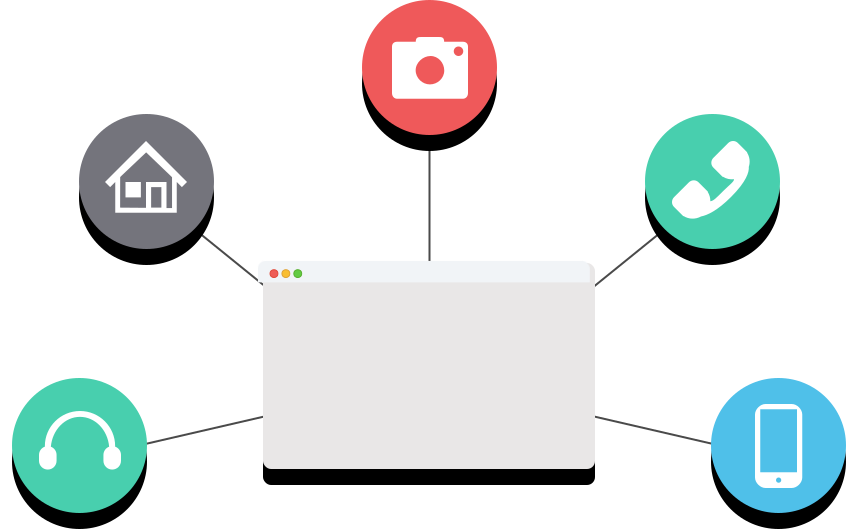

Sabertooth
A Javascript Library for Bluetooth Low Energy Devices
View on GitHub
View package on NPM
View package on Bower
Intro
Overview
Getting Started
Docs
General Accessibility
GATT Services Support
General Methods
.connect()
.disconnect()
Demo
Bridging the gap between the web and the physical world through Bluetooth.
Previously, interacting with Bluetooth devices was limited to native applications. Access to connect, read, and write from Bluetooth devices is now made available to web applications thanks to the Web Bluetooth API and modern web browsers like Chrome and Firefox, Opera who are incresingly adding support for new features in the Web Bluetooth API Spec.
Overview
We’ve crafted some handsome templates for you to use. Go ahead and click 'Continue to layouts' to browse through them. You can easily go back to edit your page before publishing. After publishing your page, you can revisit the page generator and switch to another theme. Your Page content will be preserved.
Getting Started
Web-Bluetooth (currently v1.0.0) has a few easy ways to quickly get started each one appealing to your preferences.
Install with npm
You can install web-bluetooth with npm
Require('web-bluetooth') will load all of Bootstrap's jQuery plugins onto the jQuery object. The bootstrap module itself does not export anything. You can manually load Bootstrap's jQuery plugins individually by loading the /js/*.js files under the package's top-level directory.
$ npm install web-bluetoothInstall with Bower
You can install web-bluetooth with Bower
$ bower install web-bluetoothGeneral Accesibility
While the Web Bluetooth API is still in development, features have been made available. This library has made available several important features to develop web applications using Bluetooth connections.
Note: The Web Bluetooth API is still in development and many features have not been implemented across browsers. For the current status of the API, please follow this link.
| Feature | ChromeOS | Android Mobile | MacOSX |
|---|---|---|---|
| Device Discovery | ✓ | ✓ | ✓ |
| Device Connecting | ✓ | ✓ | ✓ |
| Device Disconnecting | ✓ | ✓ | ✓ |
| Device Services Read | ✓ | ✓ |
GATT Services Support
Services are collections of characteristics and relationships to other services that encapsulate the behavior of part of a device. For example, the “Battery Service” exposes the Battery Level of a device broadcasting the “Battery Service” service.
This library abstracts over core GATT Service types with special attention to service types that are common and that are most applicable in this current stage of Bluetooth device availability.
For the full list of normative Services click here. As the Web Bluetooth API continues to be developed and as this library matures, more service types will be made available.
| Service | Supported | Spec Type | Assigned Number |
|---|---|---|---|
| Alert Notification | 'alert-notification' | 0x1811 | |
| Battery Service | ✓ | 'battery_service' | 0x180F |
| Blood Pressure | 'blood_pressure' | 0x1810 | |
| Cycling Power | 'cycling_power' | 0x1818 | |
| Cycling Speed and Cadence | 'cycling_speed_and_cadence' | 0x1816 | |
| Device Info | ✓ | 'device_information' | 0x180A |
| Generic Access | ✓ | 'generic_access' | 0x1800 |
| Generic Attribute | ✓ | 'generic_attribute' | 0x1801 |
| Health Thermometer | 'health-thermometer' | 0x1809 | |
| Heart Rate | ✓ | 'health-heart_rate' | 0x180D |
| Running Speed and Cadence | 'running_speed_and_cadence' | 0x1814 | |
| Tx Power | ✓ | 'tx_power' | 0x1804 |
General Methods Provided by Library
Services are collections of characteristics and relationships to other services that encapsulate the behavior of part of a device. For example, the “Battery Service” exposes the Battery Level of a device broadcasting the “Battery Service” service.
.connect()
Method allows you to establish a persistent connection with a Bluetooth device.
//Connecting to a device.
let connectedDevice = device;
bluetooth.connect(connectedDevice,(server) => {
connectedDevice = device;
}
The above block of code establishes a connection with a device.
.disconnect()
Method allows you to establish a persistent connection with a Bluetooth device.
//Connecting to a device.
let connectedDevice = device;
bluetooth.connect(connectedDevice,(server) => {
connectedDevice = device;
}
The above block of code establishes a connection with a device.
Demo
Battery Service

This demo uses the Web-Bluetooth library to connect to a device broadcasting a Battery Service characteristic and reads it's level.
View the demo. | Visit the GitHub page.
Notes:
• Requires Android 6.0 Marshmellow or ChromeOS.
• Enable the 'Web Bluetooth' flag.
Authors and Contributors
You can @mention a GitHub username to generate a link to their profile. The resulting <a> element
will link to the contributor’s GitHub Profile. For example: In 2007, Chris Wanstrath (@defunkt), PJ Hyett (@pjhyett),
and Tom Preston-Werner (@mojombo) founded GitHub.